<!DOCTYPE html>
<html xmlns="http://www.w3.org/1999/xhtml" lang="en" xml:lang="en"><head>

<meta charset="utf-8">
<meta name="generator" content="quarto-1.8.27">

<meta name="viewport" content="width=device-width, initial-scale=1.0, user-scalable=yes">


<title>Practical 5: Neural Networks using TensorFlow – Data Science for Spatial Systems</title>
<style>
code{white-space: pre-wrap;}
span.smallcaps{font-variant: small-caps;}
div.columns{display: flex; gap: min(4vw, 1.5em);}
div.column{flex: auto; overflow-x: auto;}
div.hanging-indent{margin-left: 1.5em; text-indent: -1.5em;}
ul.task-list{list-style: none;}
ul.task-list li input[type="checkbox"] {
  width: 0.8em;
  margin: 0 0.8em 0.2em -1em; /* quarto-specific, see https://github.com/quarto-dev/quarto-cli/issues/4556 */ 
  vertical-align: middle;
}
/* CSS for syntax highlighting */
html { -webkit-text-size-adjust: 100%; }
pre > code.sourceCode { white-space: pre; position: relative; }
pre > code.sourceCode > span { display: inline-block; line-height: 1.25; }
pre > code.sourceCode > span:empty { height: 1.2em; }
.sourceCode { overflow: visible; }
code.sourceCode > span { color: inherit; text-decoration: inherit; }
div.sourceCode { margin: 1em 0; }
pre.sourceCode { margin: 0; }
@media screen {
div.sourceCode { overflow: auto; }
}
@media print {
pre > code.sourceCode { white-space: pre-wrap; }
pre > code.sourceCode > span { text-indent: -5em; padding-left: 5em; }
}
pre.numberSource code
  { counter-reset: source-line 0; }
pre.numberSource code > span
  { position: relative; left: -4em; counter-increment: source-line; }
pre.numberSource code > span > a:first-child::before
  { content: counter(source-line);
    position: relative; left: -1em; text-align: right; vertical-align: baseline;
    border: none; display: inline-block;
    -webkit-touch-callout: none; -webkit-user-select: none;
    -khtml-user-select: none; -moz-user-select: none;
    -ms-user-select: none; user-select: none;
    padding: 0 4px; width: 4em;
  }
pre.numberSource { margin-left: 3em;  padding-left: 4px; }
div.sourceCode
  {   }
@media screen {
pre > code.sourceCode > span > a:first-child::before { text-decoration: underline; }
}
</style>


<script src="../../site_libs/quarto-nav/quarto-nav.js"></script>
<script src="../../site_libs/quarto-nav/headroom.min.js"></script>
<script src="../../site_libs/clipboard/clipboard.min.js"></script>
<script src="../../site_libs/quarto-search/autocomplete.umd.js"></script>
<script src="../../site_libs/quarto-search/fuse.min.js"></script>
<script src="../../site_libs/quarto-search/quarto-search.js"></script>
<meta name="quarto:offset" content="../../">
<link href="../..//img/favicon.ico" rel="icon">
<script src="../../site_libs/quarto-html/quarto.js" type="module"></script>
<script src="../../site_libs/quarto-html/tabsets/tabsets.js" type="module"></script>
<script src="../../site_libs/quarto-html/axe/axe-check.js" type="module"></script>
<script src="../../site_libs/quarto-html/popper.min.js"></script>
<script src="../../site_libs/quarto-html/tippy.umd.min.js"></script>
<script src="../../site_libs/quarto-html/anchor.min.js"></script>
<link href="../../site_libs/quarto-html/tippy.css" rel="stylesheet">
<link href="../../site_libs/quarto-html/quarto-syntax-highlighting-408f04d1afa8d7898803e15a45f31975.css" rel="stylesheet" class="quarto-color-scheme" id="quarto-text-highlighting-styles">
<link href="../../site_libs/quarto-html/quarto-syntax-highlighting-dark-408f04d1afa8d7898803e15a45f31975.css" rel="stylesheet" class="quarto-color-scheme quarto-color-alternate" id="quarto-text-highlighting-styles">
<link href="../../site_libs/quarto-html/quarto-syntax-highlighting-408f04d1afa8d7898803e15a45f31975.css" rel="stylesheet" class="quarto-color-scheme-extra" id="quarto-text-highlighting-styles">
<script src="../../site_libs/bootstrap/bootstrap.min.js"></script>
<link href="../../site_libs/bootstrap/bootstrap-icons.css" rel="stylesheet">
<link href="../../site_libs/bootstrap/bootstrap-5457fb42737ce7af87b82faab80c0026.min.css" rel="stylesheet" append-hash="true" class="quarto-color-scheme" id="quarto-bootstrap" data-mode="light">
<link href="../../site_libs/bootstrap/bootstrap-dark-5457fb42737ce7af87b82faab80c0026.min.css" rel="stylesheet" append-hash="true" class="quarto-color-scheme quarto-color-alternate" id="quarto-bootstrap" data-mode="light">
<link href="../../site_libs/bootstrap/bootstrap-5457fb42737ce7af87b82faab80c0026.min.css" rel="stylesheet" append-hash="true" class="quarto-color-scheme-extra" id="quarto-bootstrap" data-mode="light">
<script src="../../site_libs/quarto-contrib/glightbox/glightbox.min.js"></script>
<link href="../../site_libs/quarto-contrib/glightbox/glightbox.min.css" rel="stylesheet">
<link href="../../site_libs/quarto-contrib/glightbox/lightbox.css" rel="stylesheet">
<script id="quarto-search-options" type="application/json">{
  "location": "navbar",
  "copy-button": false,
  "collapse-after": 3,
  "panel-placement": "end",
  "type": "overlay",
  "limit": 50,
  "keyboard-shortcut": [
    "f",
    "/",
    "s"
  ],
  "show-item-context": false,
  "language": {
    "search-no-results-text": "No results",
    "search-matching-documents-text": "matching documents",
    "search-copy-link-title": "Copy link to search",
    "search-hide-matches-text": "Hide additional matches",
    "search-more-match-text": "more match in this document",
    "search-more-matches-text": "more matches in this document",
    "search-clear-button-title": "Clear",
    "search-text-placeholder": "",
    "search-detached-cancel-button-title": "Cancel",
    "search-submit-button-title": "Submit",
    "search-label": "Search"
  }
}</script>

  <script src="https://cdnjs.cloudflare.com/polyfill/v3/polyfill.min.js?features=es6"></script>
  <script src="https://cdn.jsdelivr.net/npm/mathjax@3/es5/tex-chtml-full.js" type="text/javascript"></script>

<script type="text/javascript">
const typesetMath = (el) => {
  if (window.MathJax) {
    // MathJax Typeset
    window.MathJax.typeset([el]);
  } else if (window.katex) {
    // KaTeX Render
    var mathElements = el.getElementsByClassName("math");
    var macros = [];
    for (var i = 0; i < mathElements.length; i++) {
      var texText = mathElements[i].firstChild;
      if (mathElements[i].tagName == "SPAN" && texText && texText.data) {
        window.katex.render(texText.data, mathElements[i], {
          displayMode: mathElements[i].classList.contains('display'),
          throwOnError: false,
          macros: macros,
          fleqn: false
        });
      }
    }
  }
}
window.Quarto = {
  typesetMath
};
</script>

<meta property="og:title" content="Practical 5: Neural Networks using TensorFlow – Data Science for Spatial Systems">
<meta property="og:description" content="">
<meta property="og:image" content="https://huanfachen.github.io/DSSS_2025/sessions/W05_neural_networks/images/tensorflow-Python-API.png">
<meta property="og:site_name" content="Foundations">
<meta property="og:locale" content="en_GB">
<meta property="og:image:height" content="986">
<meta property="og:image:width" content="1432">
</head>

<body class="nav-fixed quarto-light">

<div id="quarto-search-results"></div>
  <header id="quarto-header" class="headroom fixed-top">
    <nav class="navbar navbar-expand-md " data-bs-theme="dark">
      <div class="navbar-container container-fluid">
      <div class="navbar-brand-container mx-auto">
    <a href="../../index.html" class="navbar-brand navbar-brand-logo">
    
    
    </a>
    <a class="navbar-brand" href="../../index.html">
    <span class="navbar-title">Data Science for Spatial Systems</span>
    </a>
  </div>
            <div id="quarto-search" class="" title="Search"></div>
          <button class="navbar-toggler" type="button" data-bs-toggle="collapse" data-bs-target="#navbarCollapse" aria-controls="navbarCollapse" role="menu" aria-expanded="false" aria-label="Toggle navigation" onclick="if (window.quartoToggleHeadroom) { window.quartoToggleHeadroom(); }">
  <span class="navbar-toggler-icon"></span>
</button>
          <div class="collapse navbar-collapse" id="navbarCollapse">
            <ul class="navbar-nav navbar-nav-scroll me-auto">
  <li class="nav-item">
    <a class="nav-link" href="../../setup/index.html"> 
<span class="menu-text">Setup</span></a>
  </li>  
  <li class="nav-item dropdown ">
    <a class="nav-link dropdown-toggle" href="#" id="nav-menu-week-by-week" role="link" data-bs-toggle="dropdown" aria-expanded="false">
 <span class="menu-text">Week-by-Week</span>
    </a>
    <ul class="dropdown-menu" aria-labelledby="nav-menu-week-by-week">    
        <li>
    <a class="dropdown-item" href="../../sessions/index.html">
 <span class="dropdown-text">Overview</span></a>
  </li>  
        <li><hr class="dropdown-divider"></li>
        <li class="dropdown-header">Part 1: Supervised Learning</li>
        <li>
    <a class="dropdown-item" href="../../sessions/week1.html">
 <span class="dropdown-text">1. Introduction to machine learning</span></a>
  </li>  
        <li>
    <a class="dropdown-item" href="../../sessions/week2.html">
 <span class="dropdown-text">2. Supervised Learning Metrics</span></a>
  </li>  
        <li>
    <a class="dropdown-item" href="../../sessions/week3.html">
 <span class="dropdown-text">3. Supervised Learning Workflow</span></a>
  </li>  
        <li><hr class="dropdown-divider"></li>
        <li class="dropdown-header">Part 2: Methods</li>
        <li>
    <a class="dropdown-item" href="../../sessions/week4.html">
 <span class="dropdown-text">4. Tree-based Methods</span></a>
  </li>  
        <li>
    <a class="dropdown-item" href="../../sessions/week5.html">
 <span class="dropdown-text">5. Neural Networks</span></a>
  </li>  
        <li>
    <a class="dropdown-item" href="../../sessions/week6.html">
 <span class="dropdown-text">6. Graph Neural Networks</span></a>
  </li>  
        <li><hr class="dropdown-divider"></li>
        <li class="dropdown-header">Part 3: Advanced Topics</li>
        <li>
    <a class="dropdown-item" href="../../sessions/week7.html">
 <span class="dropdown-text">7. Model Interpretation &amp; Feature Selection</span></a>
  </li>  
        <li>
    <a class="dropdown-item" href="../../sessions/week8.html">
 <span class="dropdown-text">8. Imbalanced Data</span></a>
  </li>  
        <li>
    <a class="dropdown-item" href="../../sessions/week9.html">
 <span class="dropdown-text">9. Machine Learning Ops</span></a>
  </li>  
        <li>
    <a class="dropdown-item" href="../../sessions/week10.html">
 <span class="dropdown-text">10. Testing Machine Learning Systems</span></a>
  </li>  
        <li>
    <a class="dropdown-item" href="../../references.html">
 <span class="dropdown-text">Bibliography</span></a>
  </li>  
    </ul>
  </li>
  <li class="nav-item dropdown ">
    <a class="nav-link dropdown-toggle" href="#" id="nav-menu-assessments" role="link" data-bs-toggle="dropdown" aria-expanded="false">
 <span class="menu-text">Assessments</span>
    </a>
    <ul class="dropdown-menu" aria-labelledby="nav-menu-assessments">    
        <li>
    <a class="dropdown-item" href="../../assessments/index.html">
 <span class="dropdown-text">Overview</span></a>
  </li>  
    </ul>
  </li>
  <li class="nav-item">
    <a class="nav-link" href="../../help.html"> 
<span class="menu-text">Getting Help</span></a>
  </li>  
</ul>
          </div> <!-- /navcollapse -->
            <div class="quarto-navbar-tools">
  <a href="" class="quarto-reader-toggle quarto-navigation-tool px-1" onclick="window.quartoToggleReader(); return false;" title="Toggle reader mode">
  <div class="quarto-reader-toggle-btn">
  <i class="bi"></i>
  </div>
</a>
</div>
      </div> <!-- /container-fluid -->
    </nav>
</header>
<!-- content -->
<div id="quarto-content" class="quarto-container page-columns page-rows-contents page-layout-article page-navbar">
<!-- sidebar -->
<!-- margin-sidebar -->
    <div id="quarto-margin-sidebar" class="sidebar margin-sidebar">
        <nav id="TOC" role="doc-toc" class="toc-active">
    <h2 id="toc-title">On this page</h2>
   
  <ul>
  <li><a href="#introduction" id="toc-introduction" class="nav-link active" data-scroll-target="#introduction">Introduction</a></li>
  <li><a href="#setting-up-google-colab" id="toc-setting-up-google-colab" class="nav-link" data-scroll-target="#setting-up-google-colab">Setting up Google Colab</a></li>
  <li><a href="#overview-of-tensorflow" id="toc-overview-of-tensorflow" class="nav-link" data-scroll-target="#overview-of-tensorflow">Overview of TensorFlow</a>
  <ul class="collapse">
  <li><a href="#features-of-tf" id="toc-features-of-tf" class="nav-link" data-scroll-target="#features-of-tf">Features of TF</a></li>
  <li><a href="#tensorflows-python-api" id="toc-tensorflows-python-api" class="nav-link" data-scroll-target="#tensorflows-python-api">TensorFlow’s Python API</a></li>
  <li><a href="#tensorflows-architecture" id="toc-tensorflows-architecture" class="nav-link" data-scroll-target="#tensorflows-architecture">TensorFlow’s Architecture</a></li>
  <li><a href="#hardware" id="toc-hardware" class="nav-link" data-scroll-target="#hardware">Hardware</a></li>
  </ul></li>
  <li><a href="#set-up-tensorflow" id="toc-set-up-tensorflow" class="nav-link" data-scroll-target="#set-up-tensorflow">Set up TensorFlow</a></li>
  <li><a href="#key-data-type-tensors" id="toc-key-data-type-tensors" class="nav-link" data-scroll-target="#key-data-type-tensors">Key data type: tensors</a>
  <ul class="collapse">
  <li><a href="#tensors" id="toc-tensors" class="nav-link" data-scroll-target="#tensors">Tensors</a></li>
  <li><a href="#indexing" id="toc-indexing" class="nav-link" data-scroll-target="#indexing">Indexing</a></li>
  <li><a href="#operations" id="toc-operations" class="nav-link" data-scroll-target="#operations">Operations</a></li>
  </ul></li>
  <li><a href="#tensors-and-numpy-ndarray" id="toc-tensors-and-numpy-ndarray" class="nav-link" data-scroll-target="#tensors-and-numpy-ndarray">Tensors and numpy ndarray</a></li>
  <li><a href="#gradients" id="toc-gradients" class="nav-link" data-scroll-target="#gradients">Gradients</a>
  <ul class="collapse">
  <li><a href="#computing-gradients-analytically" id="toc-computing-gradients-analytically" class="nav-link" data-scroll-target="#computing-gradients-analytically">Computing gradients analytically</a></li>
  <li><a href="#computing-gradients-numerically" id="toc-computing-gradients-numerically" class="nav-link" data-scroll-target="#computing-gradients-numerically">Computing gradients numerically</a></li>
  <li><a href="#computing-gradients-with-autodiff" id="toc-computing-gradients-with-autodiff" class="nav-link" data-scroll-target="#computing-gradients-with-autodiff">Computing gradients with Autodiff</a></li>
  </ul></li>
  <li><a href="#building-a-simple-neural-network-using-tf" id="toc-building-a-simple-neural-network-using-tf" class="nav-link" data-scroll-target="#building-a-simple-neural-network-using-tf">Building a simple neural network using TF</a>
  <ul class="collapse">
  <li><a href="#neural-network-overview" id="toc-neural-network-overview" class="nav-link" data-scroll-target="#neural-network-overview">Neural Network Overview</a></li>
  <li><a href="#mnist-dataset-overview" id="toc-mnist-dataset-overview" class="nav-link" data-scroll-target="#mnist-dataset-overview">MNIST Dataset Overview</a></li>
  </ul></li>
  <li><a href="#load-a-dataset" id="toc-load-a-dataset" class="nav-link" data-scroll-target="#load-a-dataset">Load a dataset</a></li>
  <li><a href="#build-a-machine-learning-model" id="toc-build-a-machine-learning-model" class="nav-link" data-scroll-target="#build-a-machine-learning-model">Build a machine learning model</a></li>
  <li><a href="#train-and-evaluate-your-model" id="toc-train-and-evaluate-your-model" class="nav-link" data-scroll-target="#train-and-evaluate-your-model">Train and evaluate your model</a></li>
  <li><a href="#conclusion" id="toc-conclusion" class="nav-link" data-scroll-target="#conclusion">Conclusion</a></li>
  <li><a href="#references-and-recommendations" id="toc-references-and-recommendations" class="nav-link" data-scroll-target="#references-and-recommendations">References and recommendations</a></li>
  </ul>
<div class="toc-actions"><ul><li><a href="https://github.com/huanfachen/DSSS_2025/issues/new" class="toc-action"><i class="bi bi-github"></i>Report an issue</a></li></ul></div><div class="quarto-alternate-formats"><h2>Other Formats</h2><ul><li><a href="neural_networks_practical.ipynb" download="neural_networks_practical.ipynb"><i class="bi bi-journal-code"></i>Jupyter</a></li></ul></div></nav>
    </div>
<!-- main -->
<main class="content" id="quarto-document-content">

<header id="title-block-header" class="quarto-title-block default">
<div class="quarto-title">
<h1 class="title">Practical 5: Neural Networks using TensorFlow</h1>
</div>


<div class="quarto-title-meta">

    
  
    
  </div>
  


</header>


<p><a href="https://colab.research.google.com/github/huanfachen/DSSS_25/blob/main/sessions/W05_neural_networks/neural_networks_practical.ipynb" target="_parent"></a></p>
<section id="introduction" class="level2">
<h2 class="anchored" data-anchor-id="introduction">Introduction</h2>
<p>In this practical, we will introduce <a href="https://www.tensorflow.org/guide/keras/overview">Tensorflow</a> and use it to:</p>
<ol type="1">
<li>Build a simple two-layer neural network for digit recognition;</li>
<li>Train and evaluate this neural network.</li>
</ol>
</section>
<section id="setting-up-google-colab" class="level2">
<h2 class="anchored" data-anchor-id="setting-up-google-colab">Setting up Google Colab</h2>
<p>As installing and configuring tensorflow on laptop can be a pain, we recommend using Google Colab for this practical. Click <a href="https://colab.research.google.com/github/huanfachen/DSSS_25/blob/main/sessions/W05_neural_networks/neural_networks_practical.ipynb">here</a> to run this practical on Google Colab, which requires a Google account.</p>
<p>Resource limit of Google Colab under free plan:</p>
<ul>
<li>Memory: up to 12 GB.</li>
<li>Maximum duration of running a notebook: notebooks can run for at most <strong>12 hours</strong>, depending on availability and your usage patterns. (The notebook will die after at most 12 hours)</li>
<li>GPU duration: dynamic, up to a few hours. If you use GPU regularly, runtime durations will become shorter and shorter and disconnections more frequent.</li>
</ul>
<p><em>Very Important</em> - we will use the GPU on Google Colab to accelerate the model training. To do this, go to ‘Runtime’ -&gt; ‘Change runtime type’ -&gt; Select ‘T4 GPU’ -&gt; Save. See below.</p>
<p><a href="https://github.com/huanfachen/DSSS/blob/main/Figures/Colab_GPU_setting.jpg?raw=true" class="lightbox" data-gallery="quarto-lightbox-gallery-1"></a></p>
<p>If you are following along in your own development environment, rather than Colab, see the <a href="https://www.tensorflow.org/install">install guide</a> for setting up TensorFlow for development.</p>
<p>Note: if you are using your own development environment, please make sure you have upgraded to the latest <code>pip</code> before installing TensorFlow 2 package.</p>
</section>
<section id="overview-of-tensorflow" class="level2">
<h2 class="anchored" data-anchor-id="overview-of-tensorflow">Overview of TensorFlow</h2>
<p><a href="https://www.tensorflow.org/">TensorFlow</a> is an open source library developed by Google for numerical computation. It is particularly well suited for large-scale machine learning.</p>
<p>TensorFlow is based on the construction of <em>computational graphs</em>. It has evolved considerably since it’s open source release in 2015. We will use TF2, which offers many additional features built on top of core features (the most important is <code>tf.keras</code> discussed in later lectures).</p>
<section id="features-of-tf" class="level3">
<h3 class="anchored" data-anchor-id="features-of-tf">Features of TF</h3>
<ul>
<li>Similar to <a href="https://numpy.org/doc/stable/"><code>numpy</code></a> but with GPU support.</li>
<li>Supports distributed computing.</li>
<li>Includes a kind of just-in-time (JIT) compiler to optimise speed and memory usage.</li>
<li>Computational graphs can be saved and exported.</li>
<li>Supports autodiff and provides numerous advanced optimisers.</li>
</ul>
</section>
<section id="tensorflows-python-api" class="level3">
<h3 class="anchored" data-anchor-id="tensorflows-python-api">TensorFlow’s Python API</h3>
<p></p>
<p>[Credit: Geron]</p>
</section>
<section id="tensorflows-architecture" class="level3">
<h3 class="anchored" data-anchor-id="tensorflows-architecture">TensorFlow’s Architecture</h3>
<p></p>
<p>[Credit: Geron]</p>
<p>At lowest level TensorFlow is implemented in C++ so that it is highly efficient.</p>
<p>We will focus on the Python TensorFlow and Keras interfaces in this practical. In real-world projects, if you use tensorflow, you will simply interact with the Keras interface but sometimes you might want to use the low-level python API for greater flexibility.</p>
</section>
<section id="hardware" class="level3">
<h3 class="anchored" data-anchor-id="hardware">Hardware</h3>
<p>One of the factors responsible for the dramatic recent growth of machine learning and AI is advances in computing power. In particular, GPU/TPU hardware that supports high levels of parallelism.</p>
<p></p>
<ul>
<li><strong>Central Processing Unit (CPU)</strong>:
<ul>
<li>General purpose</li>
<li>Low latency</li>
<li>Low throughput</li>
<li>Sequential</li>
</ul></li>
<li><strong>Graphics Processing Unit (GPU)</strong>:
<ul>
<li>Specialised (for graphics initially)</li>
<li>High latency</li>
<li>High throughput</li>
<li>Parallel execution</li>
</ul></li>
<li><strong>Tensor Processing Unit (TPU)</strong>:
<ul>
<li>Specialised for matrix operations</li>
<li>High latency</li>
<li>Very high throughput</li>
<li>Extreme parallel execution</li>
</ul></li>
</ul>
<p>In TensorFlow many operations are implemented in low-level kernels, optimised for specific hardware, e.g.&nbsp;CPUs, GPUs, or TPUs.</p>
<p>TensorFlow’s execution engine will ensure operations are run efficiently (across multiple machines and devices if set up accordingly).</p>
<section id="aside-chips-optimised-for-ml-and-ai-are-an-active-area-of-development" class="level4">
<h4 class="anchored" data-anchor-id="aside-chips-optimised-for-ml-and-ai-are-an-active-area-of-development">Aside: chips optimised for ML and AI are an active area of development</h4>
<p>Key events of GPU: - 1999: NVIDIA released GeForce 256 (the first GPU), originally for gaming tasks; - 2007: NVIDIA released CUDA (<strong>Computing Unified Device Architecture</strong>), a software layer that allows software to use the powerful processing capabilities of GPUs to perform tasks much faster, including AI and gaming; - 2022: OpenAI launched ChatGPT, which was trained on thousands of Nvidia A100 and H100 GPUs.</p>
<p>Google developed TPU in 2016.</p>
<p><a href="https://www.graphcore.ai/">Graphcore</a> developed the Intelligence Processing Unit (IPU) in 2016.</p>
<p><a href="https://www.groq.com/">Groq</a> developed the Language Processing Unit (LPU).</p>
</section>
</section>
</section>
<section id="set-up-tensorflow" class="level2">
<h2 class="anchored" data-anchor-id="set-up-tensorflow">Set up TensorFlow</h2>
<p>Import TensorFlow into your programme to get started:</p>
<div id="85d50538" class="cell" data-execution_count="1">
<div class="code-copy-outer-scaffold"><div class="sourceCode cell-code" id="cb1"><pre class="sourceCode python code-with-copy"><code class="sourceCode python"><span id="cb1-1"><a href="#cb1-1" aria-hidden="true" tabindex="-1"></a><span class="im">import</span> numpy <span class="im">as</span> np</span>
<span id="cb1-2"><a href="#cb1-2" aria-hidden="true" tabindex="-1"></a><span class="im">import</span> tensorflow <span class="im">as</span> tf</span>
<span id="cb1-3"><a href="#cb1-3" aria-hidden="true" tabindex="-1"></a><span class="im">import</span> matplotlib.pyplot <span class="im">as</span> plt</span>
<span id="cb1-4"><a href="#cb1-4" aria-hidden="true" tabindex="-1"></a></span>
<span id="cb1-5"><a href="#cb1-5" aria-hidden="true" tabindex="-1"></a><span class="bu">print</span>(<span class="st">"TensorFlow version:"</span>, tf.__version__)</span></code></pre></div><button title="Copy to Clipboard" class="code-copy-button"><i class="bi"></i></button></div>
<div class="cell-output cell-output-stderr">
<pre><code>2026-02-10 14:49:04.081527: I external/local_xla/xla/tsl/cuda/cudart_stub.cc:31] Could not find cuda drivers on your machine, GPU will not be used.
2026-02-10 14:49:04.126938: I tensorflow/core/platform/cpu_feature_guard.cc:210] This TensorFlow binary is optimized to use available CPU instructions in performance-critical operations.
To enable the following instructions: AVX2 FMA, in other operations, rebuild TensorFlow with the appropriate compiler flags.
2026-02-10 14:49:05.643001: I external/local_xla/xla/tsl/cuda/cudart_stub.cc:31] Could not find cuda drivers on your machine, GPU will not be used.</code></pre>
</div>
<div class="cell-output cell-output-stdout">
<pre><code>TensorFlow version: 2.20.0</code></pre>
</div>
</div>
</section>
<section id="key-data-type-tensors" class="level2">
<h2 class="anchored" data-anchor-id="key-data-type-tensors">Key data type: tensors</h2>
<p>TensorFlow API centers around “Tensors” (essentially multi-dimensional arrays of matrices), which are similar to numpy <a href="https://numpy.org/doc/stable/reference/generated/numpy.ndarray.html"><code>ndarray</code></a>.</p>
<section id="tensors" class="level3">
<h3 class="anchored" data-anchor-id="tensors">Tensors</h3>
<p>Can construct constant tensors with <code>tf.constant</code>.</p>
<div id="1bf195c6" class="cell" data-execution_count="2">
<div class="code-copy-outer-scaffold"><div class="sourceCode cell-code" id="cb4"><pre class="sourceCode python code-with-copy"><code class="sourceCode python"><span id="cb4-1"><a href="#cb4-1" aria-hidden="true" tabindex="-1"></a>tf.constant([[<span class="fl">1.</span>, <span class="fl">2.</span>, <span class="fl">3.</span>], [<span class="fl">4.</span>, <span class="fl">5.</span>, <span class="fl">6.</span>]]) <span class="co"># 2x3 matrix</span></span></code></pre></div><button title="Copy to Clipboard" class="code-copy-button"><i class="bi"></i></button></div>
<div class="cell-output cell-output-stderr">
<pre><code>2026-02-10 14:49:06.226321: E external/local_xla/xla/stream_executor/cuda/cuda_platform.cc:51] failed call to cuInit: INTERNAL: CUDA error: Failed call to cuInit: UNKNOWN ERROR (303)</code></pre>
</div>
<div class="cell-output cell-output-display" data-execution_count="2">
<pre><code>&lt;tf.Tensor: shape=(2, 3), dtype=float32, numpy=
array([[1., 2., 3.],
       [4., 5., 6.]], dtype=float32)&gt;</code></pre>
</div>
</div>
<div id="27b79e5f" class="cell" data-execution_count="3">
<div class="code-copy-outer-scaffold"><div class="sourceCode cell-code" id="cb7"><pre class="sourceCode python code-with-copy"><code class="sourceCode python"><span id="cb7-1"><a href="#cb7-1" aria-hidden="true" tabindex="-1"></a>tf.constant(<span class="dv">42</span>) <span class="co"># scalar</span></span></code></pre></div><button title="Copy to Clipboard" class="code-copy-button"><i class="bi"></i></button></div>
<div class="cell-output cell-output-display" data-execution_count="3">
<pre><code>&lt;tf.Tensor: shape=(), dtype=int32, numpy=42&gt;</code></pre>
</div>
</div>
<p>Tensors have a shape and data type (dtype).</p>
<div id="ccc6d2b7" class="cell" data-execution_count="4">
<div class="code-copy-outer-scaffold"><div class="sourceCode cell-code" id="cb9"><pre class="sourceCode python code-with-copy"><code class="sourceCode python"><span id="cb9-1"><a href="#cb9-1" aria-hidden="true" tabindex="-1"></a>t <span class="op">=</span> tf.constant([[<span class="fl">1.</span>, <span class="fl">2.</span>, <span class="fl">3.</span>], [<span class="fl">4.</span>, <span class="fl">5.</span>, <span class="fl">6.</span>]])</span>
<span id="cb9-2"><a href="#cb9-2" aria-hidden="true" tabindex="-1"></a>t.shape</span></code></pre></div><button title="Copy to Clipboard" class="code-copy-button"><i class="bi"></i></button></div>
<div class="cell-output cell-output-display" data-execution_count="4">
<pre><code>TensorShape([2, 3])</code></pre>
</div>
</div>
<div id="9a29a6c9" class="cell" data-execution_count="5">
<div class="code-copy-outer-scaffold"><div class="sourceCode cell-code" id="cb11"><pre class="sourceCode python code-with-copy"><code class="sourceCode python"><span id="cb11-1"><a href="#cb11-1" aria-hidden="true" tabindex="-1"></a>t.dtype</span></code></pre></div><button title="Copy to Clipboard" class="code-copy-button"><i class="bi"></i></button></div>
<div class="cell-output cell-output-display" data-execution_count="5">
<pre><code>tf.float32</code></pre>
</div>
</div>
</section>
<section id="indexing" class="level3">
<h3 class="anchored" data-anchor-id="indexing">Indexing</h3>
<p>Tensor indexing is very similar to numpy.</p>
<div id="9299d948" class="cell" data-execution_count="6">
<div class="code-copy-outer-scaffold"><div class="sourceCode cell-code" id="cb13"><pre class="sourceCode python code-with-copy"><code class="sourceCode python"><span id="cb13-1"><a href="#cb13-1" aria-hidden="true" tabindex="-1"></a>t[:, <span class="dv">1</span>:]</span></code></pre></div><button title="Copy to Clipboard" class="code-copy-button"><i class="bi"></i></button></div>
<div class="cell-output cell-output-display" data-execution_count="6">
<pre><code>&lt;tf.Tensor: shape=(2, 2), dtype=float32, numpy=
array([[2., 3.],
       [5., 6.]], dtype=float32)&gt;</code></pre>
</div>
</div>
<div id="13dd8855" class="cell" data-execution_count="7">
<div class="code-copy-outer-scaffold"><div class="sourceCode cell-code" id="cb15"><pre class="sourceCode python code-with-copy"><code class="sourceCode python"><span id="cb15-1"><a href="#cb15-1" aria-hidden="true" tabindex="-1"></a>t[..., <span class="dv">1</span>,  tf.newaxis]</span></code></pre></div><button title="Copy to Clipboard" class="code-copy-button"><i class="bi"></i></button></div>
<div class="cell-output cell-output-display" data-execution_count="7">
<pre><code>&lt;tf.Tensor: shape=(2, 1), dtype=float32, numpy=
array([[2.],
       [5.]], dtype=float32)&gt;</code></pre>
</div>
</div>
</section>
<section id="operations" class="level3">
<h3 class="anchored" data-anchor-id="operations">Operations</h3>
<p>Variety of tensor operations are possible.</p>
<div id="c95090cf" class="cell" data-execution_count="8">
<div class="code-copy-outer-scaffold"><div class="sourceCode cell-code" id="cb17"><pre class="sourceCode python code-with-copy"><code class="sourceCode python"><span id="cb17-1"><a href="#cb17-1" aria-hidden="true" tabindex="-1"></a>t <span class="op">+</span> <span class="dv">10</span></span></code></pre></div><button title="Copy to Clipboard" class="code-copy-button"><i class="bi"></i></button></div>
<div class="cell-output cell-output-display" data-execution_count="8">
<pre><code>&lt;tf.Tensor: shape=(2, 3), dtype=float32, numpy=
array([[11., 12., 13.],
       [14., 15., 16.]], dtype=float32)&gt;</code></pre>
</div>
</div>
<div id="0d8d0489" class="cell" data-execution_count="9">
<div class="code-copy-outer-scaffold"><div class="sourceCode cell-code" id="cb19"><pre class="sourceCode python code-with-copy"><code class="sourceCode python"><span id="cb19-1"><a href="#cb19-1" aria-hidden="true" tabindex="-1"></a><span class="co"># square</span></span>
<span id="cb19-2"><a href="#cb19-2" aria-hidden="true" tabindex="-1"></a>tf.square(t)</span></code></pre></div><button title="Copy to Clipboard" class="code-copy-button"><i class="bi"></i></button></div>
<div class="cell-output cell-output-display" data-execution_count="9">
<pre><code>&lt;tf.Tensor: shape=(2, 3), dtype=float32, numpy=
array([[ 1.,  4.,  9.],
       [16., 25., 36.]], dtype=float32)&gt;</code></pre>
</div>
</div>
<div id="be7303b9" class="cell" data-execution_count="10">
<div class="code-copy-outer-scaffold"><div class="sourceCode cell-code" id="cb21"><pre class="sourceCode python code-with-copy"><code class="sourceCode python"><span id="cb21-1"><a href="#cb21-1" aria-hidden="true" tabindex="-1"></a><span class="co"># matrix multiplication</span></span>
<span id="cb21-2"><a href="#cb21-2" aria-hidden="true" tabindex="-1"></a>t <span class="op">@</span> tf.transpose(t) </span></code></pre></div><button title="Copy to Clipboard" class="code-copy-button"><i class="bi"></i></button></div>
<div class="cell-output cell-output-display" data-execution_count="10">
<pre><code>&lt;tf.Tensor: shape=(2, 2), dtype=float32, numpy=
array([[14., 32.],
       [32., 77.]], dtype=float32)&gt;</code></pre>
</div>
</div>
</section>
</section>
<section id="tensors-and-numpy-ndarray" class="level2">
<h2 class="anchored" data-anchor-id="tensors-and-numpy-ndarray">Tensors and numpy ndarray</h2>
<p>Tensors and ndarray are highly compatible, and we can create a tensor from ndarray.</p>
<p>For the difference between tensors and ndarrays, see <a href="https://www.tensorflow.org/guide/tensor#tensors-vs-numpy-arrays">tensors documentation</a> and <a href="https://www.geeksforgeeks.org/deep-learning/pytorch-tensor-vs-numpy-array/">the geeksforgeeks post</a>. I found the latter one more interesting and easier to understand.</p>
<div id="bfdd6700" class="cell" data-execution_count="11">
<div class="code-copy-outer-scaffold"><div class="sourceCode cell-code" id="cb23"><pre class="sourceCode python code-with-copy"><code class="sourceCode python"><span id="cb23-1"><a href="#cb23-1" aria-hidden="true" tabindex="-1"></a>a <span class="op">=</span> np.array([<span class="fl">2.</span>, <span class="fl">4.</span>, <span class="fl">5.</span>])</span>
<span id="cb23-2"><a href="#cb23-2" aria-hidden="true" tabindex="-1"></a>tf.constant(a)</span></code></pre></div><button title="Copy to Clipboard" class="code-copy-button"><i class="bi"></i></button></div>
<div class="cell-output cell-output-display" data-execution_count="11">
<pre><code>&lt;tf.Tensor: shape=(3,), dtype=float64, numpy=array([2., 4., 5.])&gt;</code></pre>
</div>
</div>
<p>Can convert tensor to ndarray.</p>
<div id="74ff60e9" class="cell" data-execution_count="12">
<div class="code-copy-outer-scaffold"><div class="sourceCode cell-code" id="cb25"><pre class="sourceCode python code-with-copy"><code class="sourceCode python"><span id="cb25-1"><a href="#cb25-1" aria-hidden="true" tabindex="-1"></a>t.numpy()</span></code></pre></div><button title="Copy to Clipboard" class="code-copy-button"><i class="bi"></i></button></div>
<div class="cell-output cell-output-display" data-execution_count="12">
<pre><code>array([[1., 2., 3.],
       [4., 5., 6.]], dtype=float32)</code></pre>
</div>
</div>
<p>Can apply numpy operations to tensors and vice versa.</p>
<div id="b624a4f9" class="cell" data-execution_count="13">
<div class="code-copy-outer-scaffold"><div class="sourceCode cell-code" id="cb27"><pre class="sourceCode python code-with-copy"><code class="sourceCode python"><span id="cb27-1"><a href="#cb27-1" aria-hidden="true" tabindex="-1"></a>np.array(t)</span></code></pre></div><button title="Copy to Clipboard" class="code-copy-button"><i class="bi"></i></button></div>
<div class="cell-output cell-output-display" data-execution_count="13">
<pre><code>array([[1., 2., 3.],
       [4., 5., 6.]], dtype=float32)</code></pre>
</div>
</div>
<div id="0891a443" class="cell" data-execution_count="14">
<div class="code-copy-outer-scaffold"><div class="sourceCode cell-code" id="cb29"><pre class="sourceCode python code-with-copy"><code class="sourceCode python"><span id="cb29-1"><a href="#cb29-1" aria-hidden="true" tabindex="-1"></a>tf.square(a)</span></code></pre></div><button title="Copy to Clipboard" class="code-copy-button"><i class="bi"></i></button></div>
<div class="cell-output cell-output-display" data-execution_count="14">
<pre><code>&lt;tf.Tensor: shape=(3,), dtype=float64, numpy=array([ 4., 16., 25.])&gt;</code></pre>
</div>
</div>
<div id="1c9367ec" class="cell" data-execution_count="15">
<div class="code-copy-outer-scaffold"><div class="sourceCode cell-code" id="cb31"><pre class="sourceCode python code-with-copy"><code class="sourceCode python"><span id="cb31-1"><a href="#cb31-1" aria-hidden="true" tabindex="-1"></a>np.square(t)</span></code></pre></div><button title="Copy to Clipboard" class="code-copy-button"><i class="bi"></i></button></div>
<div class="cell-output cell-output-display" data-execution_count="15">
<pre><code>array([[ 1.,  4.,  9.],
       [16., 25., 36.]], dtype=float32)</code></pre>
</div>
</div>
</section>
<section id="gradients" class="level2">
<h2 class="anchored" data-anchor-id="gradients">Gradients</h2>
<p><strong>Notes:</strong> the section of ‘gradients’ is optional, and you don’t need to understand it. However, we recommend you to read through it as it is key to understanding how neural networks are trained under the hood.</p>
<p>When training neural networks using gradient descent based approaches, we often need to compute the gradients, in particular, the gradient of the cost function with respect to the model weights.</p>
<p>TensorFlow supports automatical differentiation, which allows gradients to be computed automatically. We will compute gradients analytically, numerically and using TensorFlow’s Autodiff functionality at the following point.</p>
<p>Consider this function $ f(w_1, w_2) $ is defined as:</p>
<p><span class="math display">\[
f(w_1, w_2) = 3w_1^2 + 2w_1w_2
\]</span></p>
<div id="e63ff115" class="cell" data-execution_count="16">
<div class="code-copy-outer-scaffold"><div class="sourceCode cell-code" id="cb33"><pre class="sourceCode python code-with-copy"><code class="sourceCode python"><span id="cb33-1"><a href="#cb33-1" aria-hidden="true" tabindex="-1"></a><span class="kw">def</span> f(w1, w2):</span>
<span id="cb33-2"><a href="#cb33-2" aria-hidden="true" tabindex="-1"></a>    <span class="cf">return</span> <span class="dv">3</span> <span class="op">*</span> w1 <span class="op">**</span> <span class="dv">2</span> <span class="op">+</span> <span class="dv">2</span> <span class="op">*</span> w1 <span class="op">*</span> w2</span></code></pre></div><button title="Copy to Clipboard" class="code-copy-button"><i class="bi"></i></button></div>
</div>
<div id="ff0771e3" class="cell" data-execution_count="17">
<div class="code-copy-outer-scaffold"><div class="sourceCode cell-code" id="cb34"><pre class="sourceCode python code-with-copy"><code class="sourceCode python"><span id="cb34-1"><a href="#cb34-1" aria-hidden="true" tabindex="-1"></a><span class="co"># example of w1 and w2</span></span>
<span id="cb34-2"><a href="#cb34-2" aria-hidden="true" tabindex="-1"></a>w1, w2 <span class="op">=</span> <span class="fl">5.0</span>, <span class="fl">3.0</span></span></code></pre></div><button title="Copy to Clipboard" class="code-copy-button"><i class="bi"></i></button></div>
</div>
<section id="computing-gradients-analytically" class="level3">
<h3 class="anchored" data-anchor-id="computing-gradients-analytically">Computing gradients analytically</h3>
<div id="c08174a0" class="cell" data-execution_count="18">
<div class="code-copy-outer-scaffold"><div class="sourceCode cell-code" id="cb35"><pre class="sourceCode python code-with-copy"><code class="sourceCode python"><span id="cb35-1"><a href="#cb35-1" aria-hidden="true" tabindex="-1"></a><span class="kw">def</span> df_dw1(w1, w2):</span>
<span id="cb35-2"><a href="#cb35-2" aria-hidden="true" tabindex="-1"></a>    <span class="cf">return</span> <span class="dv">6</span> <span class="op">*</span> w1 <span class="op">+</span> <span class="dv">2</span> <span class="op">*</span> w2</span>
<span id="cb35-3"><a href="#cb35-3" aria-hidden="true" tabindex="-1"></a><span class="kw">def</span> df_dw2(w1, w2):</span>
<span id="cb35-4"><a href="#cb35-4" aria-hidden="true" tabindex="-1"></a>    <span class="cf">return</span> <span class="dv">2</span> <span class="op">*</span> w1</span></code></pre></div><button title="Copy to Clipboard" class="code-copy-button"><i class="bi"></i></button></div>
</div>
<div id="28d0ae85" class="cell" data-execution_count="19">
<div class="code-copy-outer-scaffold"><div class="sourceCode cell-code" id="cb36"><pre class="sourceCode python code-with-copy"><code class="sourceCode python"><span id="cb36-1"><a href="#cb36-1" aria-hidden="true" tabindex="-1"></a>df_dw1(w1, w2)</span></code></pre></div><button title="Copy to Clipboard" class="code-copy-button"><i class="bi"></i></button></div>
<div class="cell-output cell-output-display" data-execution_count="19">
<pre><code>36.0</code></pre>
</div>
</div>
<div id="dc4989a4" class="cell" data-execution_count="20">
<div class="code-copy-outer-scaffold"><div class="sourceCode cell-code" id="cb38"><pre class="sourceCode python code-with-copy"><code class="sourceCode python"><span id="cb38-1"><a href="#cb38-1" aria-hidden="true" tabindex="-1"></a>df_dw2(w1, w2)</span></code></pre></div><button title="Copy to Clipboard" class="code-copy-button"><i class="bi"></i></button></div>
<div class="cell-output cell-output-display" data-execution_count="20">
<pre><code>10.0</code></pre>
</div>
</div>
<p>If we compute the gradient analytically, we would need an extra function evaluation for every gradient. Computationally infeasible for many cases, e.g.&nbsp;large neural networks with hundreds of thousands or millions of parameters.</p>
</section>
<section id="computing-gradients-numerically" class="level3">
<h3 class="anchored" data-anchor-id="computing-gradients-numerically">Computing gradients numerically</h3>
<p>Compute the gradient by finite differences.</p>
<div id="a7447d15" class="cell" data-execution_count="21">
<div class="code-copy-outer-scaffold"><div class="sourceCode cell-code" id="cb40"><pre class="sourceCode python code-with-copy"><code class="sourceCode python"><span id="cb40-1"><a href="#cb40-1" aria-hidden="true" tabindex="-1"></a>eps <span class="op">=</span> <span class="fl">1e-6</span></span>
<span id="cb40-2"><a href="#cb40-2" aria-hidden="true" tabindex="-1"></a>(f(w1 <span class="op">+</span> eps, w2) <span class="op">-</span> f(w1, w2)) <span class="op">/</span> eps</span></code></pre></div><button title="Copy to Clipboard" class="code-copy-button"><i class="bi"></i></button></div>
<div class="cell-output cell-output-display" data-execution_count="21">
<pre><code>36.000003007075065</code></pre>
</div>
</div>
<div id="279deefe" class="cell" data-execution_count="22">
<div class="code-copy-outer-scaffold"><div class="sourceCode cell-code" id="cb42"><pre class="sourceCode python code-with-copy"><code class="sourceCode python"><span id="cb42-1"><a href="#cb42-1" aria-hidden="true" tabindex="-1"></a>(f(w1, w2 <span class="op">+</span> eps) <span class="op">-</span> f(w1, w2)) <span class="op">/</span> eps</span></code></pre></div><button title="Copy to Clipboard" class="code-copy-button"><i class="bi"></i></button></div>
<div class="cell-output cell-output-display" data-execution_count="22">
<pre><code>10.000000003174137</code></pre>
</div>
</div>
<p>Note - the gradients computed numerically are approximate.</p>
</section>
<section id="computing-gradients-with-autodiff" class="level3">
<h3 class="anchored" data-anchor-id="computing-gradients-with-autodiff">Computing gradients with Autodiff</h3>
<p>Autodiff builds derivatives of each stage of the computational graph so that gradients can be computed automatically and efficiently.</p>
<div id="5e074969" class="cell" data-execution_count="23">
<div class="code-copy-outer-scaffold"><div class="sourceCode cell-code" id="cb44"><pre class="sourceCode python code-with-copy"><code class="sourceCode python"><span id="cb44-1"><a href="#cb44-1" aria-hidden="true" tabindex="-1"></a>w1, w2 <span class="op">=</span> tf.Variable(<span class="fl">5.</span>), tf.Variable(<span class="fl">3.</span>)</span>
<span id="cb44-2"><a href="#cb44-2" aria-hidden="true" tabindex="-1"></a><span class="cf">with</span> tf.GradientTape() <span class="im">as</span> tape:</span>
<span id="cb44-3"><a href="#cb44-3" aria-hidden="true" tabindex="-1"></a>    z <span class="op">=</span> f(w1, w2)</span>
<span id="cb44-4"><a href="#cb44-4" aria-hidden="true" tabindex="-1"></a></span>
<span id="cb44-5"><a href="#cb44-5" aria-hidden="true" tabindex="-1"></a>gradients <span class="op">=</span> tape.gradient(z, [w1, w2])</span></code></pre></div><button title="Copy to Clipboard" class="code-copy-button"><i class="bi"></i></button></div>
</div>
<div id="8face230" class="cell" data-execution_count="24">
<div class="code-copy-outer-scaffold"><div class="sourceCode cell-code" id="cb45"><pre class="sourceCode python code-with-copy"><code class="sourceCode python"><span id="cb45-1"><a href="#cb45-1" aria-hidden="true" tabindex="-1"></a>gradients</span></code></pre></div><button title="Copy to Clipboard" class="code-copy-button"><i class="bi"></i></button></div>
<div class="cell-output cell-output-display" data-execution_count="24">
<pre><code>[&lt;tf.Tensor: shape=(), dtype=float32, numpy=36.0&gt;,
 &lt;tf.Tensor: shape=(), dtype=float32, numpy=10.0&gt;]</code></pre>
</div>
</div>
<p>Computing gradients with Autodiff only requires one computation, regardless of how many derivatives need to be computed. The results do not suffer from any numerical approximations, although it is limited by machine precision arithmetic.</p>
</section>
</section>
<section id="building-a-simple-neural-network-using-tf" class="level2">
<h2 class="anchored" data-anchor-id="building-a-simple-neural-network-using-tf">Building a simple neural network using TF</h2>
<p>We will build a 2-hidden layers fully connected neural network (a.k.a multilayer perceptron) with TF. This example uses a low-level approach to better understand all mechanics behind building neural networks and the training process.</p>
<section id="neural-network-overview" class="level3">
<h3 class="anchored" data-anchor-id="neural-network-overview">Neural Network Overview</h3>
<p></p>
</section>
<section id="mnist-dataset-overview" class="level3">
<h3 class="anchored" data-anchor-id="mnist-dataset-overview">MNIST Dataset Overview</h3>
<p>We will train the neural network to identify MNIST handwritten digits. The dataset contains 60,000 examples for training and 10,000 examples for testing. The digits have been size-normalized and centered in a fixed-size image (28x28 pixels) with values from 0 to 255.</p>
<p>In this example, each image will be converted to float32, normalized to [0, 1] and flattened to a 1-D array of 784 features (28*28).</p>
<div class="quarto-figure quarto-figure-center">
<figure class="figure">
<p><a href="http://neuralnetworksanddeeplearning.com/images/mnist_100_digits.png" class="lightbox" data-gallery="quarto-lightbox-gallery-2" title="MNIST Dataset"></a></p>
<figcaption>MNIST Dataset</figcaption>
</figure>
</div>
<p>More info: http://yann.lecun.com/exdb/mnist/</p>
<div id="a91c935b" class="cell" data-execution_count="25">
<div class="code-copy-outer-scaffold"><div class="sourceCode cell-code" id="cb47"><pre class="sourceCode python code-with-copy"><code class="sourceCode python"><span id="cb47-1"><a href="#cb47-1" aria-hidden="true" tabindex="-1"></a><span class="co"># MNIST dataset parameters.</span></span>
<span id="cb47-2"><a href="#cb47-2" aria-hidden="true" tabindex="-1"></a>num_classes <span class="op">=</span> <span class="dv">10</span> <span class="co"># total classes (0-9 digits).</span></span>
<span id="cb47-3"><a href="#cb47-3" aria-hidden="true" tabindex="-1"></a>num_feature_one_dimension <span class="op">=</span> <span class="dv">28</span> <span class="co"># img shape: 28*28</span></span>
<span id="cb47-4"><a href="#cb47-4" aria-hidden="true" tabindex="-1"></a></span>
<span id="cb47-5"><a href="#cb47-5" aria-hidden="true" tabindex="-1"></a><span class="co"># Training parameters.</span></span>
<span id="cb47-6"><a href="#cb47-6" aria-hidden="true" tabindex="-1"></a><span class="co"># learning_rate = 0.1</span></span>
<span id="cb47-7"><a href="#cb47-7" aria-hidden="true" tabindex="-1"></a><span class="co"># training_steps = 2000</span></span>
<span id="cb47-8"><a href="#cb47-8" aria-hidden="true" tabindex="-1"></a><span class="co"># batch_size = 256</span></span>
<span id="cb47-9"><a href="#cb47-9" aria-hidden="true" tabindex="-1"></a><span class="co"># display_step = 100</span></span>
<span id="cb47-10"><a href="#cb47-10" aria-hidden="true" tabindex="-1"></a></span>
<span id="cb47-11"><a href="#cb47-11" aria-hidden="true" tabindex="-1"></a><span class="co"># Network parameters.</span></span>
<span id="cb47-12"><a href="#cb47-12" aria-hidden="true" tabindex="-1"></a>n_hidden_1 <span class="op">=</span> <span class="dv">128</span> <span class="co"># 1st layer number of neurons.</span></span>
<span id="cb47-13"><a href="#cb47-13" aria-hidden="true" tabindex="-1"></a>n_hidden_2 <span class="op">=</span> <span class="dv">256</span> <span class="co"># 2nd layer number of neurons.</span></span></code></pre></div><button title="Copy to Clipboard" class="code-copy-button"><i class="bi"></i></button></div>
</div>
</section>
</section>
<section id="load-a-dataset" class="level2">
<h2 class="anchored" data-anchor-id="load-a-dataset">Load a dataset</h2>
<p>Load and prepare the <a href="http://yann.lecun.com/exdb/mnist/">MNIST dataset</a>. Convert the sample data from integers to floating-point numbers:</p>
<div id="a27241e2" class="cell" data-execution_count="26">
<div class="code-copy-outer-scaffold"><div class="sourceCode cell-code" id="cb48"><pre class="sourceCode python code-with-copy"><code class="sourceCode python"><span id="cb48-1"><a href="#cb48-1" aria-hidden="true" tabindex="-1"></a>mnist <span class="op">=</span> tf.keras.datasets.mnist</span>
<span id="cb48-2"><a href="#cb48-2" aria-hidden="true" tabindex="-1"></a></span>
<span id="cb48-3"><a href="#cb48-3" aria-hidden="true" tabindex="-1"></a>(x_train, y_train), (x_test, y_test) <span class="op">=</span> mnist.load_data()</span>
<span id="cb48-4"><a href="#cb48-4" aria-hidden="true" tabindex="-1"></a><span class="co"># normalisation - convert the sample data (range of 1-125) to floating numbers</span></span>
<span id="cb48-5"><a href="#cb48-5" aria-hidden="true" tabindex="-1"></a>x_train, x_test <span class="op">=</span> x_train <span class="op">/</span> <span class="fl">255.0</span>, x_test <span class="op">/</span> <span class="fl">255.0</span></span></code></pre></div><button title="Copy to Clipboard" class="code-copy-button"><i class="bi"></i></button></div>
<div class="cell-output cell-output-stdout">
<div class="ansi-escaped-output">
<pre>Downloading data from https://storage.googleapis.com/tensorflow/tf-keras-datasets/mnist.npz


<span class="ansi-bold">       0/11490434</span> <span class="ansi-white-fg">━━━━━━━━━━━━━━━━━━━━</span> <span class="ansi-bold">0s</span> 0s/step

<span class="ansi-bold"> 4038656/11490434</span> <span class="ansi-green-fg">━━━━━━━</span><span class="ansi-white-fg">━━━━━━━━━━━━━</span> <span class="ansi-bold">0s</span> 0us/step

<span class="ansi-bold">11490434/11490434</span> <span class="ansi-green-fg">━━━━━━━━━━━━━━━━━━━━</span> <span class="ansi-bold">0s</span> 0us/step
</pre>
</div>
</div>
</div>
<div id="5ab9b5ac" class="cell" data-execution_count="27">
<div class="code-copy-outer-scaffold"><div class="sourceCode cell-code" id="cb49"><pre class="sourceCode python code-with-copy"><code class="sourceCode python"><span id="cb49-1"><a href="#cb49-1" aria-hidden="true" tabindex="-1"></a><span class="co"># function for visualising digits</span></span>
<span id="cb49-2"><a href="#cb49-2" aria-hidden="true" tabindex="-1"></a><span class="kw">def</span> plot_num(number):</span>
<span id="cb49-3"><a href="#cb49-3" aria-hidden="true" tabindex="-1"></a></span>
<span id="cb49-4"><a href="#cb49-4" aria-hidden="true" tabindex="-1"></a>  item_index <span class="op">=</span> np.where(y_train[:<span class="dv">1000</span>]<span class="op">==</span>number)</span>
<span id="cb49-5"><a href="#cb49-5" aria-hidden="true" tabindex="-1"></a>  subset<span class="op">=</span>x_train[item_index]</span>
<span id="cb49-6"><a href="#cb49-6" aria-hidden="true" tabindex="-1"></a></span>
<span id="cb49-7"><a href="#cb49-7" aria-hidden="true" tabindex="-1"></a>  egs<span class="op">=</span><span class="dv">5</span></span>
<span id="cb49-8"><a href="#cb49-8" aria-hidden="true" tabindex="-1"></a>  fig, axs <span class="op">=</span> plt.subplots(<span class="dv">1</span>,egs, figsize<span class="op">=</span>(<span class="dv">20</span>,<span class="dv">10</span>))</span>
<span id="cb49-9"><a href="#cb49-9" aria-hidden="true" tabindex="-1"></a></span>
<span id="cb49-10"><a href="#cb49-10" aria-hidden="true" tabindex="-1"></a>  <span class="cf">for</span> i <span class="kw">in</span> <span class="bu">range</span>(<span class="dv">0</span>,egs):</span>
<span id="cb49-11"><a href="#cb49-11" aria-hidden="true" tabindex="-1"></a>    axs[i].imshow(subset[i])</span>
<span id="cb49-12"><a href="#cb49-12" aria-hidden="true" tabindex="-1"></a></span>
<span id="cb49-13"><a href="#cb49-13" aria-hidden="true" tabindex="-1"></a><span class="cf">for</span> x <span class="kw">in</span> <span class="bu">range</span>(<span class="dv">0</span>,<span class="dv">10</span>):</span>
<span id="cb49-14"><a href="#cb49-14" aria-hidden="true" tabindex="-1"></a>  plot_num(x)</span></code></pre></div><button title="Copy to Clipboard" class="code-copy-button"><i class="bi"></i></button></div>
<div class="cell-output cell-output-display">
<div>
<figure class="figure">
<p><a href="neural_networks_practical_files/figure-html/cell-28-output-1.png" class="lightbox" data-gallery="quarto-lightbox-gallery-3">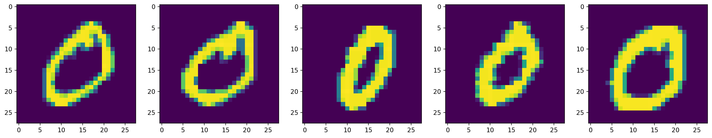</a></p>
</figure>
</div>
</div>
<div class="cell-output cell-output-display">
<div>
<figure class="figure">
<p><a href="neural_networks_practical_files/figure-html/cell-28-output-2.png" class="lightbox" data-gallery="quarto-lightbox-gallery-4">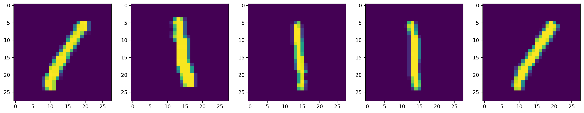</a></p>
</figure>
</div>
</div>
<div class="cell-output cell-output-display">
<div>
<figure class="figure">
<p><a href="neural_networks_practical_files/figure-html/cell-28-output-3.png" class="lightbox" data-gallery="quarto-lightbox-gallery-5">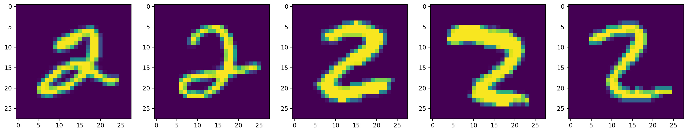</a></p>
</figure>
</div>
</div>
<div class="cell-output cell-output-display">
<div>
<figure class="figure">
<p><a href="neural_networks_practical_files/figure-html/cell-28-output-4.png" class="lightbox" data-gallery="quarto-lightbox-gallery-6">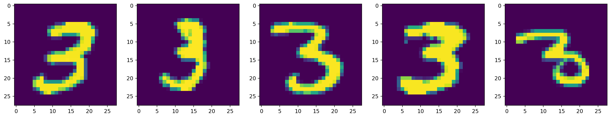</a></p>
</figure>
</div>
</div>
<div class="cell-output cell-output-display">
<div>
<figure class="figure">
<p><a href="neural_networks_practical_files/figure-html/cell-28-output-5.png" class="lightbox" data-gallery="quarto-lightbox-gallery-7">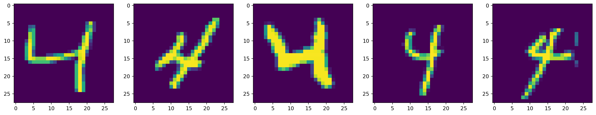</a></p>
</figure>
</div>
</div>
<div class="cell-output cell-output-display">
<div>
<figure class="figure">
<p><a href="neural_networks_practical_files/figure-html/cell-28-output-6.png" class="lightbox" data-gallery="quarto-lightbox-gallery-8">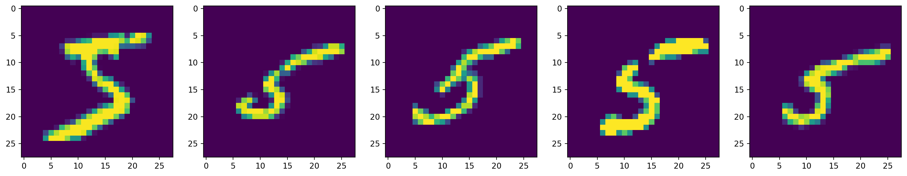</a></p>
</figure>
</div>
</div>
<div class="cell-output cell-output-display">
<div>
<figure class="figure">
<p><a href="neural_networks_practical_files/figure-html/cell-28-output-7.png" class="lightbox" data-gallery="quarto-lightbox-gallery-9">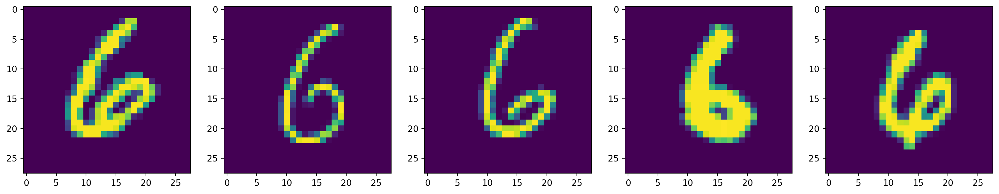</a></p>
</figure>
</div>
</div>
<div class="cell-output cell-output-display">
<div>
<figure class="figure">
<p><a href="neural_networks_practical_files/figure-html/cell-28-output-8.png" class="lightbox" data-gallery="quarto-lightbox-gallery-10">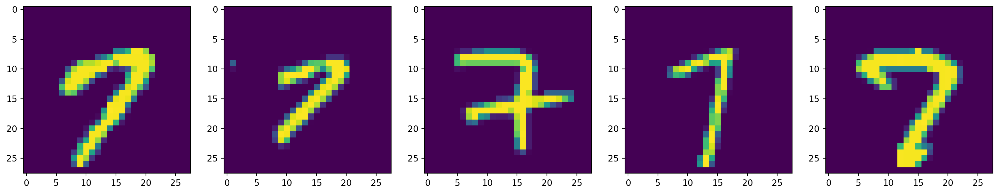</a></p>
</figure>
</div>
</div>
<div class="cell-output cell-output-display">
<div>
<figure class="figure">
<p><a href="neural_networks_practical_files/figure-html/cell-28-output-9.png" class="lightbox" data-gallery="quarto-lightbox-gallery-11">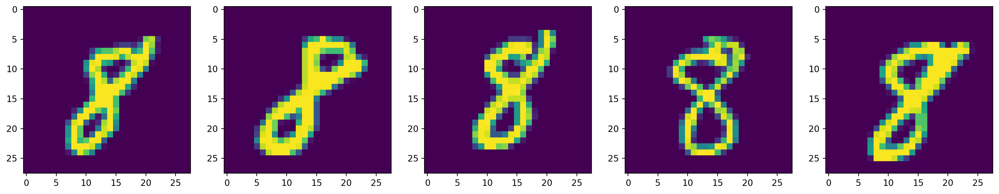</a></p>
</figure>
</div>
</div>
<div class="cell-output cell-output-display">
<div>
<figure class="figure">
<p><a href="neural_networks_practical_files/figure-html/cell-28-output-10.png" class="lightbox" data-gallery="quarto-lightbox-gallery-12">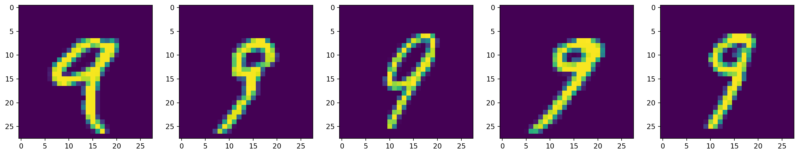</a></p>
</figure>
</div>
</div>
</div>
</section>
<section id="build-a-machine-learning-model" class="level2">
<h2 class="anchored" data-anchor-id="build-a-machine-learning-model">Build a machine learning model</h2>
<p>Build a <code>tf.keras.Sequential</code> model by stacking layers.</p>
<div id="468a7ea3" class="cell" data-execution_count="28">
<div class="code-copy-outer-scaffold"><div class="sourceCode cell-code" id="cb50"><pre class="sourceCode python code-with-copy"><code class="sourceCode python"><span id="cb50-1"><a href="#cb50-1" aria-hidden="true" tabindex="-1"></a>model <span class="op">=</span> tf.keras.models.Sequential([</span>
<span id="cb50-2"><a href="#cb50-2" aria-hidden="true" tabindex="-1"></a>  <span class="co"># input layer (28*28), which is flattened before being fed into the neural network</span></span>
<span id="cb50-3"><a href="#cb50-3" aria-hidden="true" tabindex="-1"></a>  tf.keras.layers.Flatten(input_shape<span class="op">=</span>(num_feature_one_dimension, num_feature_one_dimension)),</span>
<span id="cb50-4"><a href="#cb50-4" aria-hidden="true" tabindex="-1"></a>  <span class="co"># First fully-connected hidden layer.</span></span>
<span id="cb50-5"><a href="#cb50-5" aria-hidden="true" tabindex="-1"></a>  tf.keras.layers.Dense(n_hidden_1, activation<span class="op">=</span><span class="st">'relu'</span>),</span>
<span id="cb50-6"><a href="#cb50-6" aria-hidden="true" tabindex="-1"></a>  <span class="co"># Second fully-connected hidden layer.</span></span>
<span id="cb50-7"><a href="#cb50-7" aria-hidden="true" tabindex="-1"></a>  tf.keras.layers.Dense(n_hidden_2, activation<span class="op">=</span><span class="st">'relu'</span>),</span>
<span id="cb50-8"><a href="#cb50-8" aria-hidden="true" tabindex="-1"></a>  <span class="co"># output layer</span></span>
<span id="cb50-9"><a href="#cb50-9" aria-hidden="true" tabindex="-1"></a>  tf.keras.layers.Dense(num_classes)</span>
<span id="cb50-10"><a href="#cb50-10" aria-hidden="true" tabindex="-1"></a>])</span></code></pre></div><button title="Copy to Clipboard" class="code-copy-button"><i class="bi"></i></button></div>
<div class="cell-output cell-output-stderr">
<pre><code>/opt/hostedtoolcache/Python/3.10.19/x64/lib/python3.10/site-packages/keras/src/layers/reshaping/flatten.py:37: UserWarning: Do not pass an `input_shape`/`input_dim` argument to a layer. When using Sequential models, prefer using an `Input(shape)` object as the first layer in the model instead.
  super().__init__(**kwargs)</code></pre>
</div>
</div>
<p>For each example, the model returns a vector of <a href="https://developers.google.com/machine-learning/glossary#logits">logits</a> or <a href="https://developers.google.com/machine-learning/glossary#log-odds">log-odds</a> scores, one for each class.</p>
<div id="ffba03b2" class="cell" data-execution_count="29">
<div class="code-copy-outer-scaffold"><div class="sourceCode cell-code" id="cb52"><pre class="sourceCode python code-with-copy"><code class="sourceCode python"><span id="cb52-1"><a href="#cb52-1" aria-hidden="true" tabindex="-1"></a>predictions <span class="op">=</span> model(x_train[:<span class="dv">1</span>]).numpy()</span>
<span id="cb52-2"><a href="#cb52-2" aria-hidden="true" tabindex="-1"></a>predictions</span></code></pre></div><button title="Copy to Clipboard" class="code-copy-button"><i class="bi"></i></button></div>
<div class="cell-output cell-output-display" data-execution_count="29">
<pre><code>array([[ 0.3918128 ,  0.19488342,  0.29861137, -0.28744465,  0.33254153,
         0.13162832,  0.07101329, -0.10133955,  0.18325384, -0.1476279 ]],
      dtype=float32)</code></pre>
</div>
</div>
<p>The <code>tf.nn.softmax</code> function converts these logits to <em>probabilities</em> for each class:</p>
<div id="8f2ff6f3" class="cell" data-execution_count="30">
<div class="code-copy-outer-scaffold"><div class="sourceCode cell-code" id="cb54"><pre class="sourceCode python code-with-copy"><code class="sourceCode python"><span id="cb54-1"><a href="#cb54-1" aria-hidden="true" tabindex="-1"></a>tf.nn.softmax(predictions).numpy()</span></code></pre></div><button title="Copy to Clipboard" class="code-copy-button"><i class="bi"></i></button></div>
<div class="cell-output cell-output-display" data-execution_count="30">
<pre><code>array([[0.13014552, 0.10688183, 0.11856388, 0.06598291, 0.12265579,
        0.1003304 , 0.09442952, 0.07947963, 0.10564604, 0.07588451]],
      dtype=float32)</code></pre>
</div>
</div>
<p>Note: It is possible to bake the <code>tf.nn.softmax</code> function into the activation function for the last layer of the network. While this can make the model output more directly interpretable, this approach is discouraged as it’s impossible to provide an exact and numerically stable loss calculation for all models when using a softmax output.</p>
<p>Define a loss function for training using <code>losses.SparseCategoricalCrossentropy</code>, which takes a vector of logits and a <code>True</code> index and returns a scalar loss for each example.</p>
<div id="b01af72c" class="cell" data-execution_count="31">
<div class="code-copy-outer-scaffold"><div class="sourceCode cell-code" id="cb56"><pre class="sourceCode python code-with-copy"><code class="sourceCode python"><span id="cb56-1"><a href="#cb56-1" aria-hidden="true" tabindex="-1"></a>loss_fn <span class="op">=</span> tf.keras.losses.SparseCategoricalCrossentropy(from_logits<span class="op">=</span><span class="va">True</span>)</span></code></pre></div><button title="Copy to Clipboard" class="code-copy-button"><i class="bi"></i></button></div>
</div>
<p>This loss is equal to the negative log probability of the true class: The loss is zero if the model is sure of the correct class.</p>
<p>This untrained model gives probabilities close to random (1/10 for each class), so the initial loss should be close to <code>-tf.math.log(1/10) ~= 2.3</code>.</p>
<div id="eb09310b" class="cell" data-execution_count="32">
<div class="code-copy-outer-scaffold"><div class="sourceCode cell-code" id="cb57"><pre class="sourceCode python code-with-copy"><code class="sourceCode python"><span id="cb57-1"><a href="#cb57-1" aria-hidden="true" tabindex="-1"></a>loss_fn(y_train[:<span class="dv">1</span>], predictions).numpy()</span></code></pre></div><button title="Copy to Clipboard" class="code-copy-button"><i class="bi"></i></button></div>
<div class="cell-output cell-output-display" data-execution_count="32">
<pre><code>np.float32(2.2992866)</code></pre>
</div>
</div>
<p>Before you start training, configure and compile the model using Keras <code>Model.compile</code>. Set the <a href="https://www.tensorflow.org/api_docs/python/tf/keras/optimizers"><code>optimizer</code></a> class to <code>adam</code>, set the <code>loss</code> to the <code>loss_fn</code> function you defined earlier, and specify a metric to be evaluated for the model by setting the <code>metrics</code> parameter to <code>accuracy</code>.</p>
<div id="530f5c4f" class="cell" data-execution_count="33">
<div class="code-copy-outer-scaffold"><div class="sourceCode cell-code" id="cb59"><pre class="sourceCode python code-with-copy"><code class="sourceCode python"><span id="cb59-1"><a href="#cb59-1" aria-hidden="true" tabindex="-1"></a>model.<span class="bu">compile</span>(optimizer<span class="op">=</span><span class="st">'adam'</span>,</span>
<span id="cb59-2"><a href="#cb59-2" aria-hidden="true" tabindex="-1"></a>              loss<span class="op">=</span>loss_fn,</span>
<span id="cb59-3"><a href="#cb59-3" aria-hidden="true" tabindex="-1"></a>              metrics<span class="op">=</span>[<span class="st">'accuracy'</span>])</span></code></pre></div><button title="Copy to Clipboard" class="code-copy-button"><i class="bi"></i></button></div>
</div>
</section>
<section id="train-and-evaluate-your-model" class="level2">
<h2 class="anchored" data-anchor-id="train-and-evaluate-your-model">Train and evaluate your model</h2>
<p>Use the <code>Model.fit</code> method to adjust your model parameters and minimise the loss.</p>
<p>The <code>Model.fit</code> method trains the model for a fixed number of epochs (iterations on a dataset). In this example, we will train the model for 10 epochs.</p>
<p>In the <code>Model.fit</code> method, the <code>verbose</code> parameter controls how much output is printed during training:</p>
<ul>
<li><code>verbose=1</code>: Default. An animated progress bar for every single epoch (very noisy).</li>
<li><code>verbose=0</code>: Silent. No output.</li>
<li><code>verbose=2</code>: One line per epoch; shows the final stats for the epoch once it’s finished; much cleaner.</li>
</ul>
<div id="af1b7e77" class="cell" data-execution_count="34">
<div class="code-copy-outer-scaffold"><div class="sourceCode cell-code" id="cb60"><pre class="sourceCode python code-with-copy"><code class="sourceCode python"><span id="cb60-1"><a href="#cb60-1" aria-hidden="true" tabindex="-1"></a>model.fit(x_train, y_train, epochs<span class="op">=</span><span class="dv">10</span>, verbose<span class="op">=</span><span class="dv">2</span>)</span></code></pre></div><button title="Copy to Clipboard" class="code-copy-button"><i class="bi"></i></button></div>
<div class="cell-output cell-output-stdout">
<pre><code>Epoch 1/10
1875/1875 - 3s - 2ms/step - accuracy: 0.9345 - loss: 0.2190
Epoch 2/10
1875/1875 - 3s - 2ms/step - accuracy: 0.9717 - loss: 0.0926
Epoch 3/10
1875/1875 - 3s - 2ms/step - accuracy: 0.9795 - loss: 0.0654
Epoch 4/10
1875/1875 - 3s - 2ms/step - accuracy: 0.9843 - loss: 0.0492
Epoch 5/10
1875/1875 - 3s - 2ms/step - accuracy: 0.9876 - loss: 0.0390
Epoch 6/10
1875/1875 - 3s - 2ms/step - accuracy: 0.9894 - loss: 0.0332
Epoch 7/10
1875/1875 - 3s - 2ms/step - accuracy: 0.9910 - loss: 0.0267
Epoch 8/10
1875/1875 - 3s - 2ms/step - accuracy: 0.9926 - loss: 0.0233
Epoch 9/10
1875/1875 - 3s - 2ms/step - accuracy: 0.9930 - loss: 0.0213
Epoch 10/10
1875/1875 - 3s - 2ms/step - accuracy: 0.9933 - loss: 0.0205</code></pre>
</div>
<div class="cell-output cell-output-display" data-execution_count="34">
<pre><code>&lt;keras.src.callbacks.history.History at 0x7f35e0b24e80&gt;</code></pre>
</div>
</div>
<p>The <code>Model.evaluate</code> method checks the models performance, usually on a <a href="https://developers.google.com/machine-learning/glossary#validation-set">Validation set</a> or <a href="https://developers.google.com/machine-learning/glossary#test-set">Test set</a>.</p>
<div id="07020e04" class="cell" data-execution_count="35">
<div class="code-copy-outer-scaffold"><div class="sourceCode cell-code" id="cb63"><pre class="sourceCode python code-with-copy"><code class="sourceCode python"><span id="cb63-1"><a href="#cb63-1" aria-hidden="true" tabindex="-1"></a>model.evaluate(x_test,  y_test, verbose<span class="op">=</span><span class="dv">2</span>)</span></code></pre></div><button title="Copy to Clipboard" class="code-copy-button"><i class="bi"></i></button></div>
<div class="cell-output cell-output-stdout">
<pre><code>313/313 - 0s - 1ms/step - accuracy: 0.9799 - loss: 0.0841</code></pre>
</div>
<div class="cell-output cell-output-display" data-execution_count="35">
<pre><code>[0.08411011844873428, 0.9799000024795532]</code></pre>
</div>
</div>
<p>The image classifier is now trained to ~98% accuracy on this dataset. To learn more, read the <a href="https://www.tensorflow.org/tutorials/">TensorFlow tutorials</a>.</p>
<p>If you want your model to return a probability, you can wrap the trained model, and attach the softmax to it:</p>
<div id="eb07cefe" class="cell" data-execution_count="36">
<div class="code-copy-outer-scaffold"><div class="sourceCode cell-code" id="cb66"><pre class="sourceCode python code-with-copy"><code class="sourceCode python"><span id="cb66-1"><a href="#cb66-1" aria-hidden="true" tabindex="-1"></a>probability_model <span class="op">=</span> tf.keras.Sequential([</span>
<span id="cb66-2"><a href="#cb66-2" aria-hidden="true" tabindex="-1"></a>  model,</span>
<span id="cb66-3"><a href="#cb66-3" aria-hidden="true" tabindex="-1"></a>  tf.keras.layers.Softmax()</span>
<span id="cb66-4"><a href="#cb66-4" aria-hidden="true" tabindex="-1"></a>])</span></code></pre></div><button title="Copy to Clipboard" class="code-copy-button"><i class="bi"></i></button></div>
</div>
<p>To check a random data point and prediction:</p>
<div id="d9340069" class="cell" data-execution_count="37">
<div class="code-copy-outer-scaffold"><div class="sourceCode cell-code" id="cb67"><pre class="sourceCode python code-with-copy"><code class="sourceCode python"><span id="cb67-1"><a href="#cb67-1" aria-hidden="true" tabindex="-1"></a><span class="co">#probability_model(x_test[:1])</span></span>
<span id="cb67-2"><a href="#cb67-2" aria-hidden="true" tabindex="-1"></a>predictions<span class="op">=</span>probability_model.predict(x_test)</span>
<span id="cb67-3"><a href="#cb67-3" aria-hidden="true" tabindex="-1"></a></span>
<span id="cb67-4"><a href="#cb67-4" aria-hidden="true" tabindex="-1"></a>index<span class="op">=</span><span class="dv">20</span></span>
<span id="cb67-5"><a href="#cb67-5" aria-hidden="true" tabindex="-1"></a></span>
<span id="cb67-6"><a href="#cb67-6" aria-hidden="true" tabindex="-1"></a><span class="bu">print</span>(np.argmax(predictions[index]))</span>
<span id="cb67-7"><a href="#cb67-7" aria-hidden="true" tabindex="-1"></a>plt.imshow(x_test[index])</span></code></pre></div><button title="Copy to Clipboard" class="code-copy-button"><i class="bi"></i></button></div>
<div class="cell-output cell-output-stdout">
<div class="ansi-escaped-output">
<pre><span class="ansi-bold">  1/313</span> <span class="ansi-white-fg">━━━━━━━━━━━━━━━━━━━━</span> <span class="ansi-bold">10s</span> 32ms/step

<span class="ansi-bold"> 66/313</span> <span class="ansi-green-fg">━━━━</span><span class="ansi-white-fg">━━━━━━━━━━━━━━━━</span> <span class="ansi-bold">0s</span> 780us/step

<span class="ansi-bold">132/313</span> <span class="ansi-green-fg">━━━━━━━━</span><span class="ansi-white-fg">━━━━━━━━━━━━</span> <span class="ansi-bold">0s</span> 771us/step

<span class="ansi-bold">198/313</span> <span class="ansi-green-fg">━━━━━━━━━━━━</span><span class="ansi-white-fg">━━━━━━━━</span> <span class="ansi-bold">0s</span> 770us/step

<span class="ansi-bold">266/313</span> <span class="ansi-green-fg">━━━━━━━━━━━━━━━━</span><span class="ansi-white-fg">━━━━</span> <span class="ansi-bold">0s</span> 761us/step

<span class="ansi-bold">313/313</span> <span class="ansi-green-fg">━━━━━━━━━━━━━━━━━━━━</span> <span class="ansi-bold">0s</span> 837us/step

<span class="ansi-bold">313/313</span> <span class="ansi-green-fg">━━━━━━━━━━━━━━━━━━━━</span> <span class="ansi-bold">0s</span> 871us/step

9
</pre>
</div>
</div>
<div class="cell-output cell-output-display">
<div>
<figure class="figure">
<p><a href="neural_networks_practical_files/figure-html/cell-38-output-2.png" class="lightbox" data-gallery="quarto-lightbox-gallery-13">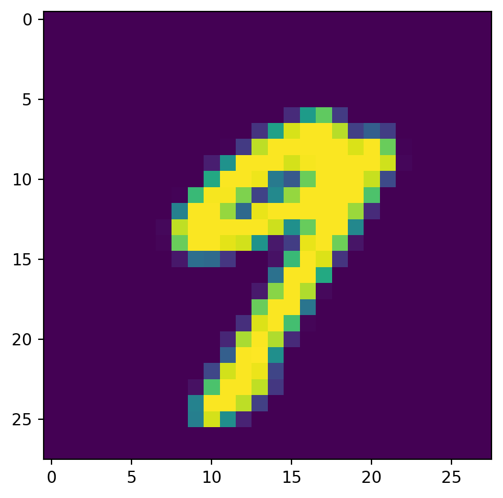</a></p>
</figure>
</div>
</div>
</div>
</section>
<section id="conclusion" class="level2">
<h2 class="anchored" data-anchor-id="conclusion">Conclusion</h2>
<p>Congratulations! You have trained a machine learning model using a prebuilt dataset using the <a href="https://www.tensorflow.org/guide/keras/overview">Keras</a> API.</p>
<p>For more examples of using Keras, check out the <a href="https://www.tensorflow.org/tutorials/keras/">tutorials</a>. To learn more about building models with Keras, read the <a href="https://www.tensorflow.org/guide/keras">guides</a>. If you want learn more about loading and preparing data, see the tutorials on <a href="https://www.tensorflow.org/tutorials/load_data/images">image data loading</a> or <a href="https://www.tensorflow.org/tutorials/load_data/csv">CSV data loading</a>.</p>
</section>
<section id="references-and-recommendations" class="level2">
<h2 class="anchored" data-anchor-id="references-and-recommendations">References and recommendations</h2>
<ol type="1">
<li>Some materials are from Machine Learning with Big Data (SPCE0038) module at UCL.</li>
</ol>


</section>

</main> <!-- /main -->
<script id="quarto-html-after-body" type="application/javascript">
  window.document.addEventListener("DOMContentLoaded", function (event) {
    const icon = "";
    const anchorJS = new window.AnchorJS();
    anchorJS.options = {
      placement: 'right',
      icon: icon
    };
    anchorJS.add('.anchored');
    const isCodeAnnotation = (el) => {
      for (const clz of el.classList) {
        if (clz.startsWith('code-annotation-')) {                     
          return true;
        }
      }
      return false;
    }
    const onCopySuccess = function(e) {
      // button target
      const button = e.trigger;
      // don't keep focus
      button.blur();
      // flash "checked"
      button.classList.add('code-copy-button-checked');
      var currentTitle = button.getAttribute("title");
      button.setAttribute("title", "Copied!");
      let tooltip;
      if (window.bootstrap) {
        button.setAttribute("data-bs-toggle", "tooltip");
        button.setAttribute("data-bs-placement", "left");
        button.setAttribute("data-bs-title", "Copied!");
        tooltip = new bootstrap.Tooltip(button, 
          { trigger: "manual", 
            customClass: "code-copy-button-tooltip",
            offset: [0, -8]});
        tooltip.show();    
      }
      setTimeout(function() {
        if (tooltip) {
          tooltip.hide();
          button.removeAttribute("data-bs-title");
          button.removeAttribute("data-bs-toggle");
          button.removeAttribute("data-bs-placement");
        }
        button.setAttribute("title", currentTitle);
        button.classList.remove('code-copy-button-checked');
      }, 1000);
      // clear code selection
      e.clearSelection();
    }
    const getTextToCopy = function(trigger) {
      const outerScaffold = trigger.parentElement.cloneNode(true);
      const codeEl = outerScaffold.querySelector('code');
      for (const childEl of codeEl.children) {
        if (isCodeAnnotation(childEl)) {
          childEl.remove();
        }
      }
      return codeEl.innerText;
    }
    const clipboard = new window.ClipboardJS('.code-copy-button:not([data-in-quarto-modal])', {
      text: getTextToCopy
    });
    clipboard.on('success', onCopySuccess);
    if (window.document.getElementById('quarto-embedded-source-code-modal')) {
      const clipboardModal = new window.ClipboardJS('.code-copy-button[data-in-quarto-modal]', {
        text: getTextToCopy,
        container: window.document.getElementById('quarto-embedded-source-code-modal')
      });
      clipboardModal.on('success', onCopySuccess);
    }
      var localhostRegex = new RegExp(/^(?:http|https):\/\/localhost\:?[0-9]*\//);
      var mailtoRegex = new RegExp(/^mailto:/);
        var filterRegex = new RegExp("https:\/\/huanfachen\.github\.io\/DSSS_2025\/");
      var isInternal = (href) => {
          return filterRegex.test(href) || localhostRegex.test(href) || mailtoRegex.test(href);
      }
      // Inspect non-navigation links and adorn them if external
     var links = window.document.querySelectorAll('a[href]:not(.nav-link):not(.navbar-brand):not(.toc-action):not(.sidebar-link):not(.sidebar-item-toggle):not(.pagination-link):not(.no-external):not([aria-hidden]):not(.dropdown-item):not(.quarto-navigation-tool):not(.about-link)');
      for (var i=0; i<links.length; i++) {
        const link = links[i];
        if (!isInternal(link.href)) {
          // undo the damage that might have been done by quarto-nav.js in the case of
          // links that we want to consider external
          if (link.dataset.originalHref !== undefined) {
            link.href = link.dataset.originalHref;
          }
        }
      }
    function tippyHover(el, contentFn, onTriggerFn, onUntriggerFn) {
      const config = {
        allowHTML: true,
        maxWidth: 500,
        delay: 100,
        arrow: false,
        appendTo: function(el) {
            return el.parentElement;
        },
        interactive: true,
        interactiveBorder: 10,
        theme: 'quarto',
        placement: 'bottom-start',
      };
      if (contentFn) {
        config.content = contentFn;
      }
      if (onTriggerFn) {
        config.onTrigger = onTriggerFn;
      }
      if (onUntriggerFn) {
        config.onUntrigger = onUntriggerFn;
      }
      window.tippy(el, config); 
    }
    const noterefs = window.document.querySelectorAll('a[role="doc-noteref"]');
    for (var i=0; i<noterefs.length; i++) {
      const ref = noterefs[i];
      tippyHover(ref, function() {
        // use id or data attribute instead here
        let href = ref.getAttribute('data-footnote-href') || ref.getAttribute('href');
        try { href = new URL(href).hash; } catch {}
        const id = href.replace(/^#\/?/, "");
        const note = window.document.getElementById(id);
        if (note) {
          return note.innerHTML;
        } else {
          return "";
        }
      });
    }
    const xrefs = window.document.querySelectorAll('a.quarto-xref');
    const processXRef = (id, note) => {
      // Strip column container classes
      const stripColumnClz = (el) => {
        el.classList.remove("page-full", "page-columns");
        if (el.children) {
          for (const child of el.children) {
            stripColumnClz(child);
          }
        }
      }
      stripColumnClz(note)
      if (id === null || id.startsWith('sec-')) {
        // Special case sections, only their first couple elements
        const container = document.createElement("div");
        if (note.children && note.children.length > 2) {
          container.appendChild(note.children[0].cloneNode(true));
          for (let i = 1; i < note.children.length; i++) {
            const child = note.children[i];
            if (child.tagName === "P" && child.innerText === "") {
              continue;
            } else {
              container.appendChild(child.cloneNode(true));
              break;
            }
          }
          if (window.Quarto?.typesetMath) {
            window.Quarto.typesetMath(container);
          }
          return container.innerHTML
        } else {
          if (window.Quarto?.typesetMath) {
            window.Quarto.typesetMath(note);
          }
          return note.innerHTML;
        }
      } else {
        // Remove any anchor links if they are present
        const anchorLink = note.querySelector('a.anchorjs-link');
        if (anchorLink) {
          anchorLink.remove();
        }
        if (window.Quarto?.typesetMath) {
          window.Quarto.typesetMath(note);
        }
        if (note.classList.contains("callout")) {
          return note.outerHTML;
        } else {
          return note.innerHTML;
        }
      }
    }
    for (var i=0; i<xrefs.length; i++) {
      const xref = xrefs[i];
      tippyHover(xref, undefined, function(instance) {
        instance.disable();
        let url = xref.getAttribute('href');
        let hash = undefined; 
        if (url.startsWith('#')) {
          hash = url;
        } else {
          try { hash = new URL(url).hash; } catch {}
        }
        if (hash) {
          const id = hash.replace(/^#\/?/, "");
          const note = window.document.getElementById(id);
          if (note !== null) {
            try {
              const html = processXRef(id, note.cloneNode(true));
              instance.setContent(html);
            } finally {
              instance.enable();
              instance.show();
            }
          } else {
            // See if we can fetch this
            fetch(url.split('#')[0])
            .then(res => res.text())
            .then(html => {
              const parser = new DOMParser();
              const htmlDoc = parser.parseFromString(html, "text/html");
              const note = htmlDoc.getElementById(id);
              if (note !== null) {
                const html = processXRef(id, note);
                instance.setContent(html);
              } 
            }).finally(() => {
              instance.enable();
              instance.show();
            });
          }
        } else {
          // See if we can fetch a full url (with no hash to target)
          // This is a special case and we should probably do some content thinning / targeting
          fetch(url)
          .then(res => res.text())
          .then(html => {
            const parser = new DOMParser();
            const htmlDoc = parser.parseFromString(html, "text/html");
            const note = htmlDoc.querySelector('main.content');
            if (note !== null) {
              // This should only happen for chapter cross references
              // (since there is no id in the URL)
              // remove the first header
              if (note.children.length > 0 && note.children[0].tagName === "HEADER") {
                note.children[0].remove();
              }
              const html = processXRef(null, note);
              instance.setContent(html);
            } 
          }).finally(() => {
            instance.enable();
            instance.show();
          });
        }
      }, function(instance) {
      });
    }
        let selectedAnnoteEl;
        const selectorForAnnotation = ( cell, annotation) => {
          let cellAttr = 'data-code-cell="' + cell + '"';
          let lineAttr = 'data-code-annotation="' +  annotation + '"';
          const selector = 'span[' + cellAttr + '][' + lineAttr + ']';
          return selector;
        }
        const selectCodeLines = (annoteEl) => {
          const doc = window.document;
          const targetCell = annoteEl.getAttribute("data-target-cell");
          const targetAnnotation = annoteEl.getAttribute("data-target-annotation");
          const annoteSpan = window.document.querySelector(selectorForAnnotation(targetCell, targetAnnotation));
          const lines = annoteSpan.getAttribute("data-code-lines").split(",");
          const lineIds = lines.map((line) => {
            return targetCell + "-" + line;
          })
          let top = null;
          let height = null;
          let parent = null;
          if (lineIds.length > 0) {
              //compute the position of the single el (top and bottom and make a div)
              const el = window.document.getElementById(lineIds[0]);
              top = el.offsetTop;
              height = el.offsetHeight;
              parent = el.parentElement.parentElement;
            if (lineIds.length > 1) {
              const lastEl = window.document.getElementById(lineIds[lineIds.length - 1]);
              const bottom = lastEl.offsetTop + lastEl.offsetHeight;
              height = bottom - top;
            }
            if (top !== null && height !== null && parent !== null) {
              // cook up a div (if necessary) and position it 
              let div = window.document.getElementById("code-annotation-line-highlight");
              if (div === null) {
                div = window.document.createElement("div");
                div.setAttribute("id", "code-annotation-line-highlight");
                div.style.position = 'absolute';
                parent.appendChild(div);
              }
              div.style.top = top - 2 + "px";
              div.style.height = height + 4 + "px";
              div.style.left = 0;
              let gutterDiv = window.document.getElementById("code-annotation-line-highlight-gutter");
              if (gutterDiv === null) {
                gutterDiv = window.document.createElement("div");
                gutterDiv.setAttribute("id", "code-annotation-line-highlight-gutter");
                gutterDiv.style.position = 'absolute';
                const codeCell = window.document.getElementById(targetCell);
                const gutter = codeCell.querySelector('.code-annotation-gutter');
                gutter.appendChild(gutterDiv);
              }
              gutterDiv.style.top = top - 2 + "px";
              gutterDiv.style.height = height + 4 + "px";
            }
            selectedAnnoteEl = annoteEl;
          }
        };
        const unselectCodeLines = () => {
          const elementsIds = ["code-annotation-line-highlight", "code-annotation-line-highlight-gutter"];
          elementsIds.forEach((elId) => {
            const div = window.document.getElementById(elId);
            if (div) {
              div.remove();
            }
          });
          selectedAnnoteEl = undefined;
        };
          // Handle positioning of the toggle
      window.addEventListener(
        "resize",
        throttle(() => {
          elRect = undefined;
          if (selectedAnnoteEl) {
            selectCodeLines(selectedAnnoteEl);
          }
        }, 10)
      );
      function throttle(fn, ms) {
      let throttle = false;
      let timer;
        return (...args) => {
          if(!throttle) { // first call gets through
              fn.apply(this, args);
              throttle = true;
          } else { // all the others get throttled
              if(timer) clearTimeout(timer); // cancel #2
              timer = setTimeout(() => {
                fn.apply(this, args);
                timer = throttle = false;
              }, ms);
          }
        };
      }
        // Attach click handler to the DT
        const annoteDls = window.document.querySelectorAll('dt[data-target-cell]');
        for (const annoteDlNode of annoteDls) {
          annoteDlNode.addEventListener('click', (event) => {
            const clickedEl = event.target;
            if (clickedEl !== selectedAnnoteEl) {
              unselectCodeLines();
              const activeEl = window.document.querySelector('dt[data-target-cell].code-annotation-active');
              if (activeEl) {
                activeEl.classList.remove('code-annotation-active');
              }
              selectCodeLines(clickedEl);
              clickedEl.classList.add('code-annotation-active');
            } else {
              // Unselect the line
              unselectCodeLines();
              clickedEl.classList.remove('code-annotation-active');
            }
          });
        }
    const findCites = (el) => {
      const parentEl = el.parentElement;
      if (parentEl) {
        const cites = parentEl.dataset.cites;
        if (cites) {
          return {
            el,
            cites: cites.split(' ')
          };
        } else {
          return findCites(el.parentElement)
        }
      } else {
        return undefined;
      }
    };
    var bibliorefs = window.document.querySelectorAll('a[role="doc-biblioref"]');
    for (var i=0; i<bibliorefs.length; i++) {
      const ref = bibliorefs[i];
      const citeInfo = findCites(ref);
      if (citeInfo) {
        tippyHover(citeInfo.el, function() {
          var popup = window.document.createElement('div');
          citeInfo.cites.forEach(function(cite) {
            var citeDiv = window.document.createElement('div');
            citeDiv.classList.add('hanging-indent');
            citeDiv.classList.add('csl-entry');
            var biblioDiv = window.document.getElementById('ref-' + cite);
            if (biblioDiv) {
              citeDiv.innerHTML = biblioDiv.innerHTML;
            }
            popup.appendChild(citeDiv);
          });
          return popup.innerHTML;
        });
      }
    }
  });
  </script>
</div> <!-- /content -->
<footer class="footer">
  <div class="nav-footer">
    <div class="nav-footer-left">
<p><a href="https://creativecommons.org/licenses/by-nc-sa/4.0/">CC BY-NC-SA 4.0</a> 2025–, Huanfa Chen, Adam Dennett, Bea Taylor</p>
</div>   
    <div class="nav-footer-center">
<p> Data Science for Spatial Systems</p>
<div class="toc-actions d-sm-block d-md-none"><ul><li><a href="https://github.com/huanfachen/DSSS_2025/issues/new" class="toc-action"><i class="bi bi-github"></i>Report an issue</a></li></ul></div></div>
    <div class="nav-footer-right">
      <ul class="footer-items list-unstyled">
    <li class="nav-item compact">
    <a class="nav-link" href="https://github.com/huanfachen/DSSS_2025">
      <i class="bi bi-github" role="img">
</i> 
    </a>
  </li>  
    <li class="nav-item compact">
    <a class="nav-link" href="https://www.linkedin.com/in/huanfa-chen/">
      <i class="bi bi-LinkedIn" role="img">
</i> 
    </a>
  </li>  
</ul>
    </div>
  </div>
</footer>
<script>var lightboxQuarto = GLightbox({"closeEffect":"zoom","descPosition":"bottom","loop":false,"openEffect":"zoom","selector":".lightbox"});
(function() {
  let previousOnload = window.onload;
  window.onload = () => {
    if (previousOnload) {
      previousOnload();
    }
    lightboxQuarto.on('slide_before_load', (data) => {
      const { slideIndex, slideNode, slideConfig, player, trigger } = data;
      const href = trigger.getAttribute('href');
      if (href !== null) {
        const imgEl = window.document.querySelector(`a[href="${href}"] img`);
        if (imgEl !== null) {
          const srcAttr = imgEl.getAttribute("src");
          if (srcAttr && srcAttr.startsWith("data:")) {
            slideConfig.href = srcAttr;
          }
        }
      } 
    });
  
    lightboxQuarto.on('slide_after_load', (data) => {
      const { slideIndex, slideNode, slideConfig, player, trigger } = data;
      if (window.Quarto?.typesetMath) {
        window.Quarto.typesetMath(slideNode);
      }
    });
  
  };
  
})();
          </script>


</body></html>